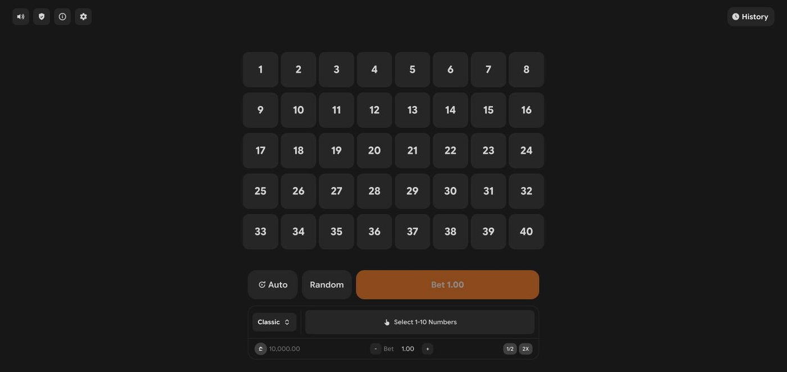

The game existed; the brand didn't fit. This project took a generic keno frontend and rebuilt it as a native MYBC Original: shared game anatomy, brand tokens, a generated identity, and fairness tooling that matches the rest of the lineup 1:1.
The starting point was a keno frontend built as a clone of another operator's game: navy and indigo palette, left-sidebar layout, a different type system. Functional, but it looked like someone else's product sitting inside the MYBC lobby.
The job wasn't to redesign keno. It was to make keno belong: same anatomy, same tokens, same fairness rituals as every other Original, so a player moving between games never has to relearn where anything lives.

The port ran on two rails. First, anatomy: the game adopted the shared Originals shell, the same header, bet controls, drawers, and history structure used across the lineup, so its skeleton matches its siblings. Second, tokens: every color in the clone was mapped to a brand token instead of being individually restyled. When the token set changes, keno changes with it.
One source of truth. The game inherits future brand changes for free and stays consistent with the other Originals without coordination.
Faster on day one, but every hex value stays hand-placed and the game drifts out of sync with the lineup on the first brand tweak.
A generated KENO wordmark and a branded boot screen with a progress bar (2.5 second minimum, matching the lineup's boot rhythm). Hits are marked with an emerald-cut brand gem; misses show as red numbers, color plus shape, never color alone. Below 520px the board switches to a compact mode so ten picks stay comfortably tappable on small phones.
Every round is verifiable in-game with the same per-round verification drawer as the rest of the Originals, a deliberate 1:1 port of that flow. Where a secure crypto context isn't available (plain HTTP on a LAN during testing), a pure-JS SHA-256/HMAC fallback keeps verification working instead of silently disabling it.
The sharpest finding of the QA pass was contractual, not visual: for exclusive free rounds the engine's reported total payout is already net of stake. The client has to display it verbatim rather than re-deriving it, otherwise every free-round win shows the wrong number. The fix was one rule, documented in the code and mirrored in the mock engine so the discrepancy can never ship silently again.
A port's real deliverable isn't the skin. It's the guarantee that the skin, the math display, and the verification ritual behave identically to every other game the player already trusts.
The ported Keno is live with a real-money operator: 23,000+ rounds played by 340+ unique players so far. The port didn't just survive contact with real players, it behaves indistinguishably from its native siblings, which was the whole brief.